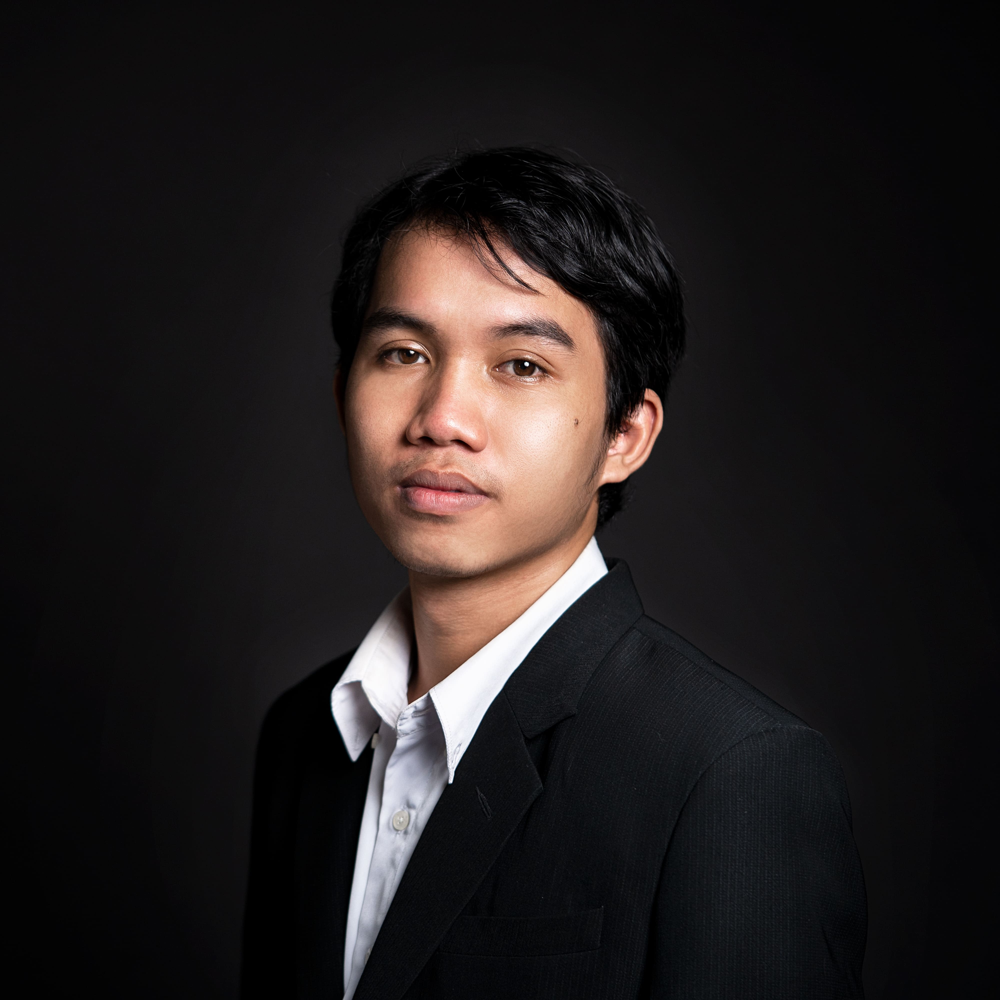

VIDEO PRODUCTION
Selected Creative Works
Creative Content Specialist | Content Strategy | Video Production
I turn creative ideas into digital content through strategy, visual production, and storytelling — with experience across e-commerce, sports, wellness, and brand campaigns.

Selected Creative Works
Brand & Event Projects
Spatial visualization and presentation work.
Browse production work, brand accounts, and campaigns.
Events, Training & Brand Content
Campaign videos, event documentations, social media content, and brand films.
Freelance Video Production · Client Work · 2026
Brand Work & Results
Detailed portfolio with social media management case studies, content samples, and performance highlights.
Career Timeline
Services
Professional profile, skills, tools, and academic background